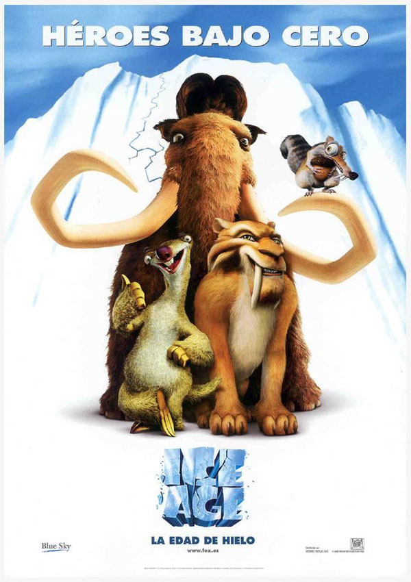

Todo comienza sobre la Ardilla Scrat que Intenta esconder su Bellota al Final cae en la Tierra encuentra su Bellota y fue
Aplastado por Manny Hace 20 años,durante la era glaciar, los animales migran hacia el sur, a tierras más cálidas. Sin
embargo, Manny, el mamut malhumorado, va en otra dirección, por nohacer lo que hacen todos. Poco después conoce a Sid,
que huye de dos animales que lo quieren matar por aver arruinado su comida , la evolución de losperezosos har llevado
que viva en las rocas del himalaya protegido de frio y humedad
Un siniestro tigre, llamado diego tiene la misión de robar a un bebé hijo del cazador humano que mató a la mitad de su manada, por orden de el, jefe de lar
manada, que desea vengarse de los humanos. Éste persigue a la madre del niño hasta una cascada, donde ella se lanza para salvar la vida de su bebé, Diegor
decide no tirarse por su temor al agua. Soto, enojado, le ordena que busque al bebé y que lo lleve a su guarida ubicada en el medio pico o lo mataría.r
Por accidente, Manny y Sid encuentran a la criatura en la orilla de un río. Sid toma la iniciativa de devolverlo y Manny lo sigue para burlarse de él.r
Tiempo después encuentran a Diego que lo reclama como suyo, pero Manny lo toma pues presiente sus verdaderas intenciones. Diego lo convence de quer
también lo quiere devolver, cosa que no es del agrado de Sid, pues Diego lo amenazó con matarlo y devorarlo después de haber devuelto al bebé. Aquír
comienza su recorrido, en busca de la familia del niño.r
Al atravesar un volcán, Manny salva la vida de Diego, para sorpresa de éste, y al otro día les cuenta la verdad sobre sus intenciones, arrepintiéndoser
y procurando un plan para deshacerse de los demás tigres diente de sable. En una pelea contra ellos, consiguen vencerlos, aunque Diego queda gravementer
herido al defender a Manny.r
Manny y Sid encuentran al grupo de humanos y le entregan el bebé a su padre. Manny y Sid voltean y ven a Diego, vivo y recuperado (aunque débil). Éster
decide ir con sus amigos, y juntos emigran al sur./p>
se Pierde en la isla y pierde su Bellota Scrat se Volvió loco y Se Pego en la Palmera encuentra un Coco y la Esconde pero se rompe la lava Scrat empieza ar
Preocuparse y Termina Sonriendo en la Pantalla.r
|  |
| Productor : Chris Wedge, Carlos Saldanha |
| Pais : Estados Unidos |
| Idioma: Ingles |
| Fecha de estreno: 15 de marzo de 2002 |
| Presupuesto : 59 mill. de $ |
| Recaudacion: 383 mill. de $ |
| Duracion:1h 21m |